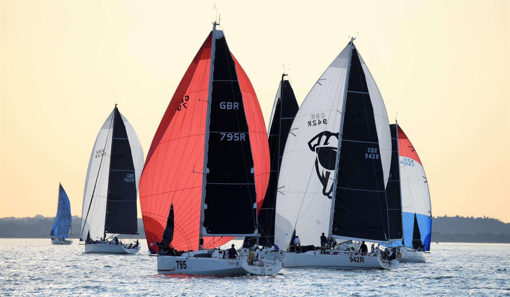

Drift Energy is building a new class of ocean-going renewable infrastructure: autonomous high-performance sailing vessels that harvest wind energy at sea and deliver it globally. Rather than fixing turbines to land or seabed, Drift's ships chase the world's best wind systems across the open ocean, generating more power than a static wind turbine and delivering it directly to ports anywhere on earth.
The company calls it net positive shipping — maritime infrastructure that produces more energy than it consumes. Featured in The Economist, CNN, and The Sunday Times, and backed by leading DeepTech and Ocean funds, Drift has drawn serious attention from the energy and maritime industries.
I work as Vessel Performance & Routing, applying meteorology, oceanography, and sailing knowledge to the questions that matter most for Drift’s operating model: where vessels sail, how they use weather systems, how routing strategy shapes energy yield, and how performance is optimised across real ocean conditions.
It sits at exactly the intersection I find most compelling — technically rigorous, commercially meaningful, and grounded in the realities of open-ocean sailing.
More on the company: drift.energy